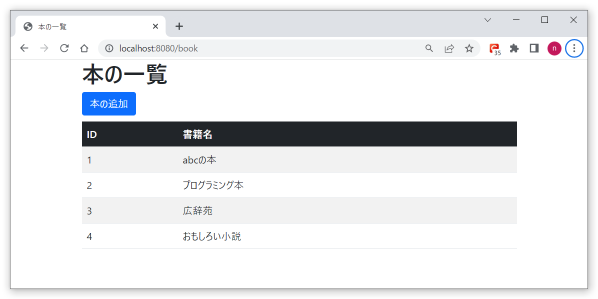
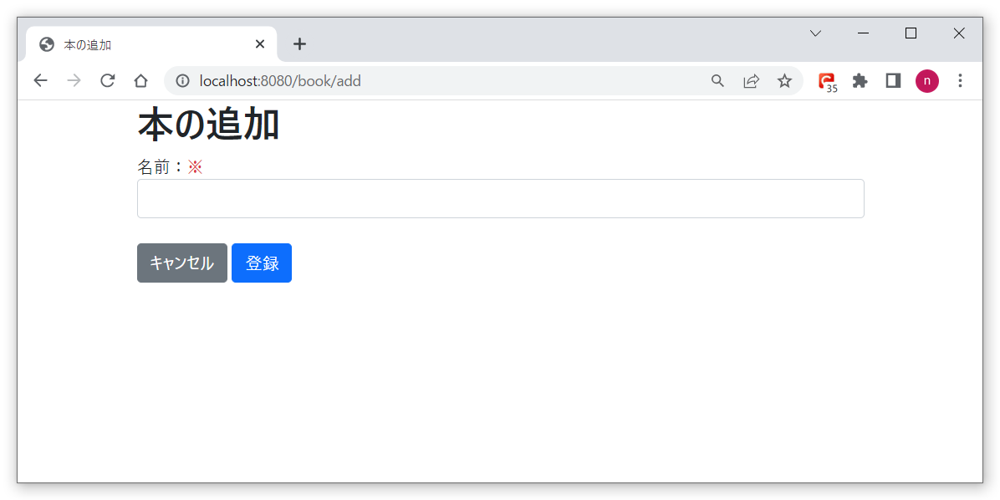
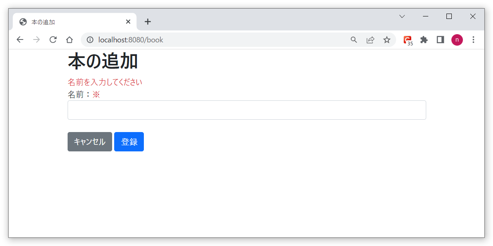
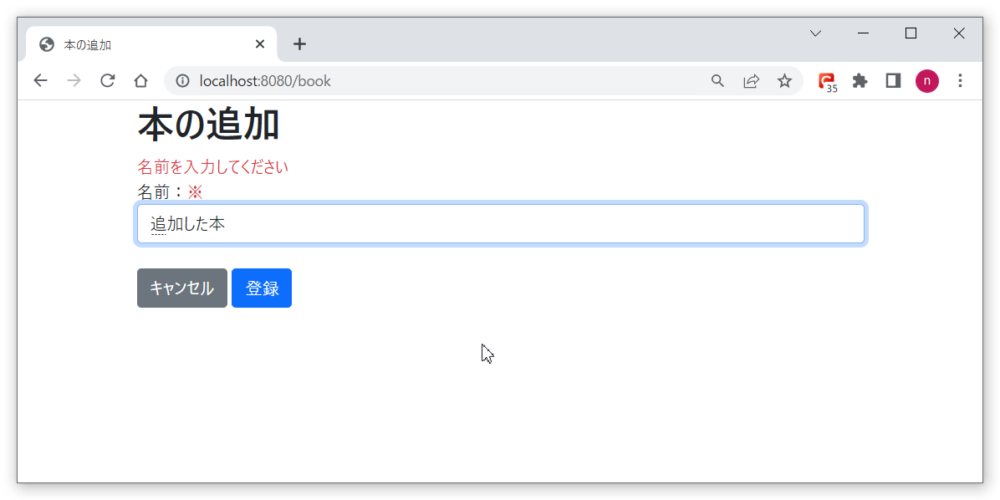
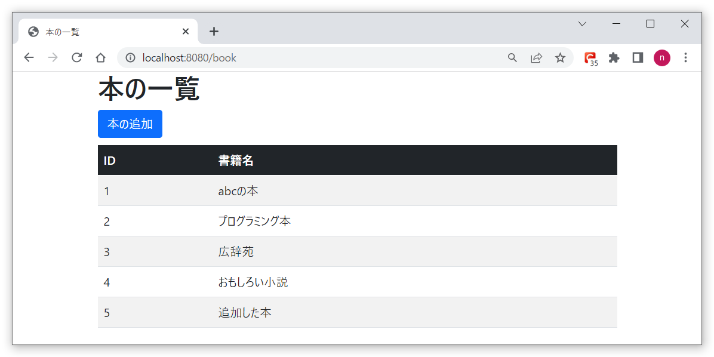

本を管理するWebアプリに、本の追加機能を実装
本の一覧画面から、本の追加機能を実装します。
以下が一覧画面のレイアウトです。追加ボタンを押します。
以下が追加画面のレイアウトです。空のまま登録ボタンを押します。
入力チェックエラーの場合
本の名前を入力し、登録ボタンを押します。
一覧画面に、追加した本の名前が表示されています。
bookテーブルに登録されている本の一覧を、画面に表示するシンプルな構成です。
ソースファイルは以下からダウンロードして下さい。
ソースについて
Controllerクラスの追加部分です。
/**
* 追加画面表示
*
* @param model
* @return
*/
@GetMapping("/add")
public String displayAdd(Model model) {
model.addAttribute("bookRequest", new BookRequest());
return "book/add";
}
/**
* 追加
*
* @param model
* @return
*/
@PostMapping
public String add(@Validated @ModelAttribute BookRequest bookRequest, BindingResult result, Model model) {
if (result.hasErrors()) {
// 入力チェックエラーの場合
List errorList = new ArrayList();
for (ObjectError error : result.getAllErrors()) {
errorList.add(error.getDefaultMessage());
}
model.addAttribute("validationError", errorList);
return "book/add";
}
// 本の追加
bookService.add(bookRequest.getBookName());
return "redirect:/book";
}
サービスクラスの追加部分です。
/**
* 追加
* @param bookName
*/
public void add(String bookName) {
bookMapper.save(bookName);
}
リポジトリクラスの追加部分です。
void save(String bookName);
SQLクエリ発行部分のXMLファイルです。
<insert id="save">
insert into Book (book_name, created_date, created_user, updated_date, updated_user)
values (#{bookName}, now(), 'test', null, null)
</insert>
追加する本のリクエストクラスです。
package com.bookmanager.book.dto;
import jakarta.validation.constraints.NotEmpty;
import jakarta.validation.constraints.Size;
import lombok.Data;
/**
* 本のリクエスト
*/
@Data
public class BookRequest {
/**
* 名前
*/
@NotEmpty(message = "名前を入力してください")
@Size(max = 512, message = "名前は512文字以内で入力してください")
private String bookName;
}
画面（フロント）側の追加画面ソースです。
<!DOCTYPE html>
<html lang="ja">
<head>
<meta charset="utf-8">
<meta name="viewport" content="width=device-width, initial-scale=1">
<title>本の追加</title>
<link href="https://cdn.jsdelivr.net/npm/bootstrap@5.0.2/dist/css/bootstrap.min.css" rel="stylesheet"
integrity="sha384-EVSTQN3/azprG1Anm3QDgpJLIm9Nao0Yz1ztcQTwFspd3yD65VohhpuuCOmLASjC" crossorigin="anonymous">
<script src="https://cdn.jsdelivr.net/npm/bootstrap@5.0.2/dist/js/bootstrap.bundle.min.js"
integrity="sha384-MrcW6ZMFYlzcLA8Nl+NtUVF0sA7MsXsP1UyJoMp4YLEuNSfAP+JcXn/tWtIaxVXM"
crossorigin="anonymous"></script>
</head>
<body>
<div class="container">
<h1>本の追加</h1>
<div th:if="${validationError}" th:each="error : ${validationError}">
<label class="text-danger" th:text="${error}"></label>
</div>
<form th:action="@{/book}" th:object="${bookRequest}" th:method="post">
<div class="form-group">
<label>名前：<span class="text-danger">※</span></label>
<input type="text" th:field="*{bookName}" class="form-control">
</div>
<br />
<div class="text-left">
<a href="/book" class="btn btn-secondary">キャンセル</a>
<input type="submit" value="登録" class="btn btn-primary">
</div>
</form>
</div>
</body>
</html>
起動方法について
BookmanagerApplication.java
を実行し、SpringBootを起動します。
http://localhost:8080/bookにアクセスし、一覧画面から追加画面に遷移し、本が追加できることを確認します。
以上です。いかがだったでしょうか。本が追加できましたでしょうか。
色々な内容の本を追加してみてください。